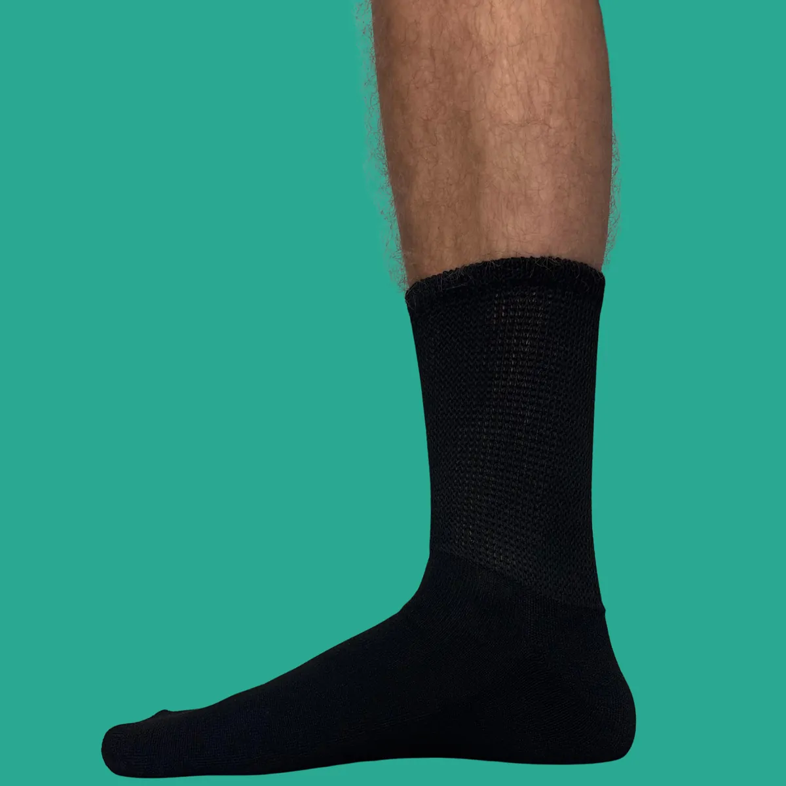

Compressiesokken – Kort
Speciaal ontworpen compressiesokken. Losse pasvorm, niet-bindend, naadloos en comfortabel voor gevoelige voeten.
- Gratis verzending in NL vanaf € 30, naar België vanaf € 75
- Levering binnen 2-3 werkdagen
- 14 dagen retourneren
- Vragen? Reactie binnen 24 uur via info@diabeticswear.com
Beschrijving
Ervaar dagelijks comfort met onze korte compressiesokken. Dankzij de lichte compressie en het zachte, ademende materiaal bieden ze ondersteuning voor vermoeide voeten en benen. Ideaal tijdens werk, reizen, sporten of gewoon thuis.
De voordelen op een rij
- Niet-bindende & naadloze manchet – sluit zacht aan zonder te strak te zitten
- Naadloos ontwerp – voorkomt wrijving en verhoogt het draagcomfort
- Ademend en zacht materiaal – houdt je voeten droog, fris en comfortabel, zelfs bij langdurig dragen
- Ondersteunende pasvorm – geeft je benen en voeten een energiek gevoel gedurende de dag
Voor wie zijn deze sokken geschikt?
Deze sokken zijn een uitstekende keuze voor
- Iedereen die veel staat of zit en behoefte heeft aan extra ondersteuning
- Mensen die houden van comfortabele, niet-knellende sokken
- Reizigers en sporters die hun benen en voeten fris willen houden
- Iedereen die waarde hecht aan dagelijks draagcomfort
Onze compressiesokken combineren stijl, comfort en praktische ondersteuning in één product. Perfect om elke dag met een prettig gevoel op pad te gaan.
Specificaties
| Materiaal | 95% polyester, 5% elastaan |
|---|---|
| Maat | 37-48 |
| Geslacht | Unisex |
| Kleur | Wit / Zwart |
Verzenden & retour
Levering: we streven ernaar je bestelling binnen 2-3 werkdagen te bezorgen.
Nederland: gratis vanaf € 30, daaronder € 4,25.
België: gratis vanaf € 75, daaronder € 5,25.
Retour: binnen 14 dagen na ontvangst, ongebruikt en in de originele verpakking. Retourkosten zijn voor eigen rekening, tenzij het product defect of verkeerd geleverd is. Lees ons retourbeleid.
Veelgestelde vragen over dit product
Welke maat hebben de sokken?
De sokken zijn unisex en passen maat 37-48.
Wat is er anders aan deze sokken?
Ze hebben een losse pasvorm, lichte compressie en een naadloze, niet-knellende manchet.
Van welk materiaal zijn ze gemaakt?
95% polyester, 5% elastaan.
Zijn deze sokken een medisch hulpmiddel?
Nee. Heb je klachten aan je voeten, overleg dan met je arts of podotherapeut welke sokken voor jou geschikt zijn.
Wat zijn de verzendkosten en levertijd?
Binnen Nederland is verzending gratis vanaf € 30 (anders € 4,25), naar België vanaf € 75 (anders € 5,25). We streven ernaar je bestelling binnen 2-3 werkdagen te leveren.
Kan ik dit product retourneren?
Ja, binnen 14 dagen na ontvangst, ongebruikt en in de originele verpakking. De retourkosten zijn voor eigen rekening, tenzij het product defect of verkeerd geleverd is.